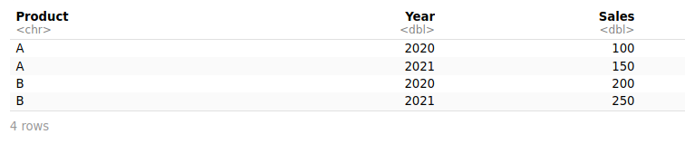
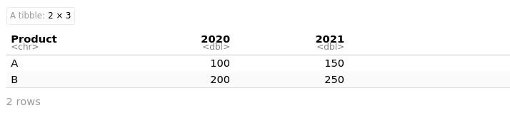
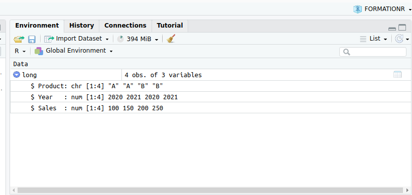
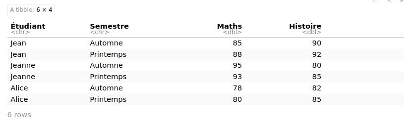
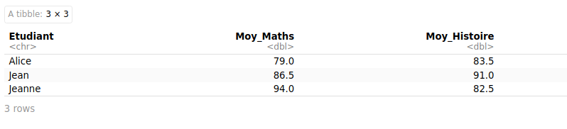
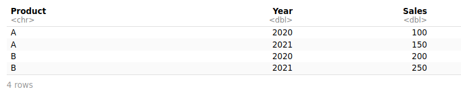
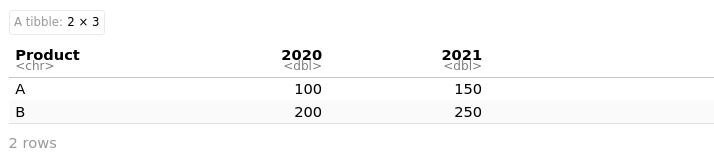
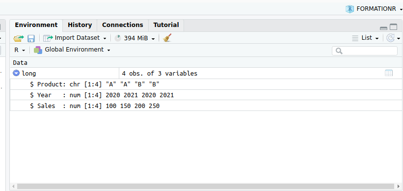
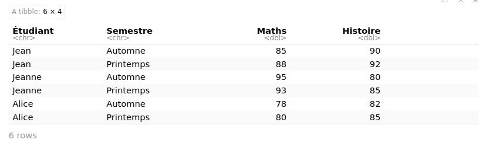
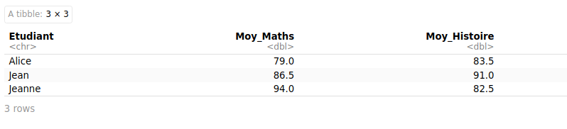

Bienvenue dans ce quatrième module de la formation “Introduction au logiciel R”.
La librairie Tidyverse, déjà utilisée dans le module 3 pour manipuler les colonnes et les lignes d’un tableau, propose également des fonctions puissantes pour transformer directement un tableau de donnée en un autre tableau, évitant parfois de nombreuses étapes fastidieuses.
Ici nous verrons notamment :
Comment résumer un jeu de données à un tableau de synthèse avec group_by et summarise,
Comment rechaper un tableau avec la fonction pivot
Vous apprendrez également à utiliser le symbôle d’assignation <- et à creer un jeu de données d’exemple.
La librairie Tidyverse, déjà utilisée dans le module 3 pour manipuler les colonnes et les lignes d’un tableau, propose également des fonctions puissantes pour transformer directement un tableau de donnée en un autre tableau, évitant parfois de nombreuses étapes fastidieuses.
library(tidyverse)
── Attaching core tidyverse packages ──────────────────────── tidyverse 2.0.0 ──
✔ dplyr 1.1.4 ✔ readr 2.1.5
✔ forcats 1.0.0 ✔ stringr 1.5.1
✔ ggplot2 3.5.1 ✔ tibble 3.2.1
✔ lubridate 1.9.3 ✔ tidyr 1.3.1
✔ purrr 1.0.2
── Conflicts ────────────────────────────────────────── tidyverse_conflicts() ──
✖ purrr::%||%() masks base::%||%()
✖ dplyr::filter() masks stats::filter()
✖ dplyr::lag() masks stats::lag()
ℹ Use the conflicted package (<http://conflicted.r-lib.org/>) to force all conflicts to become errors
1 Résumer un tableau avec group_by et summarise
Une constante en statistique est la présence de groupes ou de catégories qui séparent l’échantillon. On parle de ventilation. Les variables qui permettent de ventiler les éléments d’un échantillon s’appelle, dans le langage R, un facteur.
Par exemple, le jeu de données diamonds utilisé dans le module 3 contient trois variables facteur :
cut : la qualité de la découpe du diamant, de Fair à Ideal (5 niveaux)
color : la couleur, de A à G (7 niveaux)
clarity : la clarté, de I1 à IF (8 niveaux)
Pour obtenir la liste des modalités de chaque facteurs, on utilise la fonction level()
levels(diamonds$cut)
[1] "Fair" "Good" "Very Good" "Premium" "Ideal"
La fonction group_by() en association avec la fonction summarise() vous permet de réaliser à la volée des opérations sur chaque portion de tableau correspondant à un groupe.
Par exemple, on peut calculer la valeur moyenne du prix des diamants en fonction de leur clarté en deux étapes :
On déclare le facteur utilisé pour faire les regroupement (ici clarity) dans la fonction group_by
On déclare la variable et la fonction de synthèse dans la fonction summarise : ici la variable price et la fonction de synthèse mean(price)
# Calcul du prix moyen des diamants en fonction de leur clartédiamonds %>%group_by(clarity) %>%summarise(Moyenne =mean(price)) # on déclare ici la fonction de résumé souhaitée
On peut ajouter autant de colonnes de résumé que souhaité :
# Calcul du prix moyen, median et de l'écart-typedu prix des diamants en fonction de leur clartédiamonds %>%group_by(clarity) %>%summarise(Moyenne =mean(price),Mediane =median(price),"Ecart-type"=sd(price)) # Ici, les guillements sont nécessaires à cause du "-"
On peut également combiner plusieurs facteurs de ventilation :
# Calcul du prix moyen, median et de l'écart-typedu prix des diamants en fonction de leur clarté et de leur découpediamonds %>%group_by(clarity, cut) %>%# pour une combinaison des facteurssummarise(Moyenne =mean(price),Mediane =median(price),"Ecart-type"=sd(price))
Mais on peut aller plus loin. En effet, la fonction mutate() est sensible à la fonction group_by(). On peut donc réaliser sur un même tableau des opérations sur l’ensemble des données ou par groupes.
Supposons que je souhaite centrer et réduire le prix de mes diamants pour chaque groupe de découpe. Je peux procéder de la manière suivante :
Calculer la moyenne et l’écart-type de chaque groupe et la reporter dans le tableau avec la fonction mutate()
Calculer la valeur centrée réduite par groupe de chaque diamants
# Calcul du prix moyen, median et de l'écart-type du prix des diamants en fonction de leur clarté et de leur découpediamonds %>%group_by(cut) %>%mutate(Moyenne =mean(price), # On utilise la fonction mutate plutôt que summarise"Ecart-type"=sd(price)) %>%ungroup() %>%mutate(prix_centre = price - Moyenne,prix_centre_reduit = prix_centre /`Ecart-type`) %>%# on rétuilise le résultat précédentselect(cut,price,Moyenne,`Ecart-type`, prix_centre,prix_centre_reduit) %>%arrange(cut)
Grâce à la fonction mutate(), calculez le prix de chaque diamant rapporté à son poids (carat)
Grâce à la fonction summarise(), construisez un tableau de synthèse fournissant le prix par carat moyen et son écart-type en fonction de leur découpe (facteur cut)
Grâce à la fonction mutate(), Calculez enfin le prix par carat centré-réduit de chaque diamant par groupe de découpe
Concluez
# Ecrivez votre code ici :
2-Comment rechaper un tableau avec la fonction pivot
Le fichier de données classique contient un enregistrement par ligne et une variable par colonne. Ce format de tableau n’est pas toujours idéal pour l’analyse. Dans les tableaurs, on utilise souvent une fonction appelée tableau croisé dynamique qui permet de construire des tableaux de synthèse (pivot table en anglais). Cette fonctionnalité est assurée dans R par deux fonctions :
pivot_wider : cette fonction permet de créer autant de colonnes qu’il y a de modalités d’un facteur. Mécaniquement, le nombre de colonnes augmente, le tableau devient plus large, d’où le nom de la fonction pivot_wider
pivot_longer : à l’inverse, on peut décider de concentrer plusieurs colonnes de sorte qu’une colonne précise le nom de la variable et la colonne associée sa modalité. Le nombre de colonnes diminue mais le nombre de lignes augmente. Le tableau s’allonge, d’où le nom de la fonction pivot_longer
Un exemple valant mieux qu’un long discours, voici un tableau au format“long”

Et voici le même tableau au format “wide” avec un pivot sur la variable year. La colonne unique “year” a été transformé en plusieurs colonnes portant le nom de l’année en question. La valeur des ventes (sales) a été utilisée telle que pour remplir le tableau.

Voici comment procéder pour cela avec R. Créons d’abord l’exemple. Pour le conserver en mémoire pour la suite, nous allons l’assigner à une variable que nous appelerons “long”. On utilise pour cela le symbôle d’assignation <-. La fonction tibble() permet de créer un tableau dans R.
# Creation et assignation d'un tableau de mémoirelong <-tibble(Product =c("A", "A", "B", "B"),Year =c(2020, 2021, 2020, 2021),Sales =c(100, 150, 200, 250))long
# A tibble: 4 × 3
Product Year Sales
<chr> <dbl> <dbl>
1 A 2020 100
2 A 2021 150
3 B 2020 200
4 B 2021 250
Cette fois, le tableau ne s’affiche pas directement dans le document car il est mis en mémoire mais vous pouvez le retrouver dans l’explorateur d’environnement en haut à droite de R Studio.

Passage d’un tableau “long” à un tableau “wide”
# Passage d'un format de tableau long à un format de tableau widewide <- long %>%pivot_wider(names_from ="Year", # On définit la variable d'où proviennent les futures étiquettes de colonnevalues_from ="Sales"# On définit la variable où l'on va trouver les valeurs pour remplir le tableau ) print(wide)
# A tibble: 2 × 3
Product `2020` `2021`
<chr> <dbl> <dbl>
1 A 100 150
2 B 200 250
Passage d’un tableau “wide” à un tableau “long”
# Passage d'un format de tableau wide à un format de tableau longwide %>%pivot_longer(cols =-Product,names_to ="Year",values_to ="Sales")
# A tibble: 4 × 3
Product Year Sales
<chr> <chr> <dbl>
1 A 2020 100
2 A 2021 150
3 B 2020 200
4 B 2021 250
Exercice d’application :
Le code ci-dessous créé le tableau de données “notes_long”, executez le puis suivez les instruction.
# A tibble: 12 × 4
Etudiant Matière Semestre Note
<chr> <chr> <chr> <dbl>
1 Jean Maths Automne 85
2 Jean Histoire Automne 90
3 Jean Maths Printemps 88
4 Jean Histoire Printemps 92
5 Jeanne Maths Automne 95
6 Jeanne Histoire Automne 80
7 Jeanne Maths Printemps 93
8 Jeanne Histoire Printemps 85
9 Alice Maths Automne 78
10 Alice Histoire Automne 82
11 Alice Maths Printemps 80
12 Alice Histoire Printemps 85
1-A l’aide de la fonction pivot_wider, transformez le tableau note_long en un tableau note_wide correspondant au tableau ci-dessous.

# Ecrivez votre code ici:
2-A l’aide de la fonction group_by et summarise, affichez un tableau résumé des moyennes annuelles de chaque étudiant dans les deux matières identique à celui-ci.

# Ecrivez votre code ici:
A l’aide de l’aide de la fonction pivot_wider, trouvez une manière de réaliser le tableau des moyennes sans utilise group_by ni summarise
2-Comment rechaper un tableau avec la fonction pivot
Le fichier de données classique contient un enregistrement par ligne et une variable par colonne. Ce format de tableau n’est pas toujours idéal pour l’analyse. Dans les tableaurs, on utilise souvent une fonction appelée tableau croisé dynamique qui permet de construire des tableaux de synthèse (pivot table en anglais). Cette fonctionnalité est assurée dans R par deux fonctions :
pivot_wider : cette fonction permet de créer autant de colonnes qu’il y a de modalités d’un facteur. Mécaniquement, le nombre de colonnes augmente, le tableau devient plus large, d’où le nom de la fonction pivot_wider
pivot_longer : à l’inverse, on peut décider de concentrer plusieurs colonnes de sorte qu’une colonne précise le nom de la variable et la colonne associée sa modalité. Le nombre de colonnes diminue mais le nombre de lignes augmente. Le tableau s’allonge, d’où le nom de la fonction pivot_longer
Un exemple valant mieux qu’un long discours, voici un tableau au format “long”


Voici comment procéder pour cela avec R. Créons d’abord l’exemple. Pour le conserver en mémoire pour la suite, nous allons l’assigner à une variable que nous appelerons “long”. On utilise pour cela le symbôle d’assignation <-. La fonction tibble() permet de créer un tableau dans R.
Cette fois, le tableau ne s’affiche pas directement dans le document car il est mis en mémoire mais vous pouvez le retrouver dans l’explorateur d’environnement en haut à droite de R Studio.

Passage d’un tableau “long” à un tableau “wide”
Passage d’un tableau “wide” à un tableau “long”
Exercice d’application :
Le code ci-dessous créé le tableau de données “notes_long”, executez le puis suivez les instruction.
1-A l’aide de la fonction pivot_wider, transformez le tableau note_long en un tableau note_wide correspondant au tableau ci-dessous.

2-A l’aide de la fonction group_by et summarise, affichez un tableau résumé des moyennes annuelles de chaque étudiant dans les deux matières identique à celui-ci.

A l’aide de l’aide de la fonction pivot_wider, trouvez une manière de réaliser le tableau des moyennes sans utilise group_by ni summarise